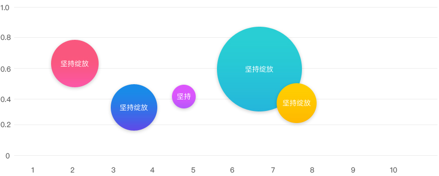

测试项目
整体数据
属性占比
性别占比：此次参与测试的用户中男女比例对半。
软件曾经使用情况：此次参与测试的用户中曾有使用过背单词软件和未使用过背单词软件的。
任务用时（不同性别）
在三项任务重，男性用户的任务用时都略长于女性用户用时。
任务错误数（不同性别）
男女用户的任务错误数相近，总体持平。
任务用时（不同组别）
曾试用过被单子软件的用户在多想任务用时上都略少于未曾使用过单词软件的用户，但又是不明显。
任务错误数（不同性别）
曾试用过被单子软件的用户在多想任务用时上都略少于未曾使用过单词软件的用户，但又是不明显。
兴趣区热力图
注视热力图
注视热词图
曾试用过被单子软件的用户在多想任务用时上都略少于未曾使用过单词软件的用户，但又是不明显。

| 热词／区域 | 坚持绽放 | 高分技巧 | 音频播放 | 单词区域 | 复习日历 | 记忆曲线 | 错词本／收藏夹 | 雅思红宝书 |
|---|---|---|---|---|---|---|---|---|
| 首次注视时长 | 1 | 2 | 3 | 4 | 5 | 6 | 7 | 8 |
| 回视 | 1 | 2 | 3 | 4 | 5 | 6 | 7 | 8 |
| 注视时长 | 1 | 2 | 3 | 4 | 5 | 6 | 7 | 8 |